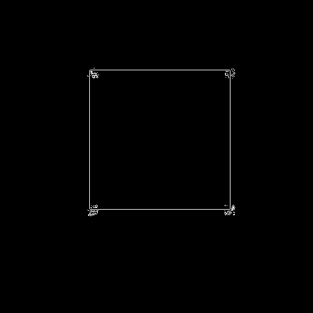
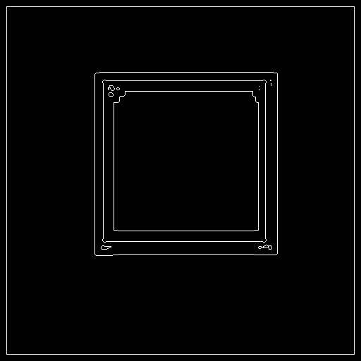

Veoh Video Compass is loading your video recommendations...
CS 7966 Image Processing
Project 4 - Feature Detection
Chelsea Robertson
croberts@cs.utah.edu
April 23, 2006
Overview
This project implements edge detection and
line detection. In order to successfully detect edges, some type of
prefiltering needs to be applied to the iamge to reduce noise. So the first
step was applying a filter or series of filters. Then an edge detection
algorithm is applied. This produces a binary image. In order to detect lines,
the Hough Transform needs to be applied. So I construct an image in the
accumulator space, and then use a series of filtering, finding maxima, and
thresholding to get the maximum points in the accumulator space. These
correspond to lines in the image space, and are then converted back, and drawn
onto the original image. Each of these steps is implemented separately in
order to experiment with the individual steps. While this provided a lot of
flexibility, it also allowed for many different combinations and lots of
testing to find the best results. Each of these steps is described in more
detail below.
Filtering
Since both edge detection algorithms are
extremely sensitive to noise, some type of prefiltering needs to be used in
order to reduce the amount of noise and texture in the image. The two types I
used, Median Filtering and Anisotropic Diffusion, are described below.
Median Filtering
Description
The median filter is the a widely used
order-statistic filter. Order-statistic filters are nonlinear spatial filters
based on ordering the values of the pixels in the neighborhood, and then
replacing the center pixel based on the results of the given filter. The median
filter orders the pixels and then replaces the center with the median pixel.
The size of the mask is generally an odd number in order for it to be centered
about the pixel being replaced. This filter is successful at reducing certain
types of random noise, like salt-and-pepper noise, while resulting in much less
blurring then linear filters.
Executable
The command line input to run the median
filtering program is below (followed by an example):
> ./median input_image size output_image
> ./median arch.jpg 3 arch_median3.fts
Images
| Original Image | 3 x 3 Median Filter | 5 x 5 Median Filter |
|
|
|
|
|
|
|
|
|
This filter preserves straight edges, but
tends to round corners and features. As you can see in the square images, the
corners become more round as the size of the filter increases. In the other
images, you can see that the edges become more defined, as the lighter areas
get lighter and the darker areas get darker.
Anisotropic Diffusion
Description
Anisotropic Diffusion is a nonlinear
smoothing filter. It uses a variable conductance term, which controls the
contrast of the edges that influence the diffusion. This filter has the
ability to preserve edges, while smoothing the rest of the image to reduce
noise. The conductance parameter should be between 0 and 1 in order to ensure
sharp edges remain.
Executable
The command line input to run the anisotropic
diffusion program is below (followed by an example):
> ./aniso input_image num_iterations conductance output_image
> ./aniso arch.jpg 5 .1 arch_aniso5.1.fts
Images
| Original Image | 5 iterations, .1 conductance | 10 iterations,
.1 conductance |
|
|
|
|
|
|
|
|
|
Anisotropic diffusion appears to have a
similar effect as the median filter does, by enhancing the contrast in the
images. One obvious thing is that the corners in the square image are preserved
with this filtering.
Edge Detection
Two different methods of edge detection were
tested, Canny and Marr-Hildreth. They are further discussed below.
Canny Edge Detection
Description
The Canny Edge Detection algorithm is based
on finding the zero crossing of the second derivative in the gradient
direction. It also applies a threshold to the gradient magnitude. You want to
choose the threshold so that it is high enough to get rid of most of the false
positives, but low enough to keep the true positives. The output is a binary
image representing the edges as ones and the rest as zeros.
Executable
The command line input to run the Canny edge
detection program is below (followed by an example):
> ./canny input_image threshold output_image
> ./canny arch.jpg 10 arch_canny.fts
Images
| threshold is too low | good threshold | threshold is too high |
|  |
|
|
|
|
|
|
|
|
As you can see in the above images, the
threshold value chosen is very important. If the threshold is set too low,
there is a lot of noise detected as edges. If it is too high, then you begin
to lose some of the actual edges in the image.
Marr-Hildreth Edge Detection
Description
The Marr-Hildreth edge detection algorithm
begins by computing the laplacian of the image. Then I found the zero crossing
of the laplacian by using the VISPack function zeroCrossings(). These become
the edges of the image. In order to try to eliminate as many false positives
as possible, a threshold is applied based on the gradient magnitude, to reduce
the number of edges. This also results in a binary image.
Executable
The command line input to run the
Marr-Hildreth edge detection program is below (followed by an example):
> ./marr input_image threshold sigma output_image
> ./marr arch.jpg 10 2 arch_marr.fts
Images
| threshold is too low | good threshold | threshold is too high |
|  |
|
|
|
|
|
|
|
|
As you can see in the above images, the
threshold value chosen is very important. If the threshold is set too low,
there is a lot of noise detected as edges. If it is too high, then you begin
to lose some of the actual edges in the image.
Hough Transform
Description
The Hough Transform takes the binary image
from the edge detector, and transforms it from image space to accumulator
space. A point in the image space becomes a curve in the accumulator space.
Likewise, a point in the accumulator space is a line in the image space.
An important fact of this is that points that are colinear in the image space
intersect in the accumulator space. So the strongest lines in the image result
in the highest pixel values in the accumulator space.
The dual space
used is (x,y) for the image and (theta,rho) for the accumulator, with the
representation of a line being, x*cos(theta) + y*sin(theta) = rho. This is how
the transformations are made between the two spaces. For my accumulator space,
theta ranges from -pi/2 to +pi/2, and rho ranges from -sqrt(2)*D to +sqrt(2)*D,
where D is the distance between the corners in the image.
In order to
get only the strongest points, I need to do some manipulation to the
accumulator space to only get the maximum points. I decided to do this by
first blurring the image with a gaussian of standard deviation of 2. Then I
use the maxima() function to find all the local maxima in the image. Since
this function returns a binary image, I have to recover the actual values at
the maximum points and apply a threshold to it. Then I do another gaussian
blurring and find the maxima again. This time after I get the maxima, I
convert the x and y into theta and rho, and store these values in a Line
structure, which gets added to a vector of lines.
The main function of
my Hough Transform code computes the Hough Transform and writes out that
image. Then it finds the maximum points and writes out that image. It also
outputs a file called "lines.txt" which contains all the (theta, rho) pairs for
the maximum points.
Executable
The command line input to run the Hough
Transform program is below (followed by an example):
> ./hough input_image scale threshold output_image
> ./hough arch.jpg 2 .75 arch_ht.fts
Images
Since the details of the Hough Transforms are
hard to see in the images below, you can click here to see the inverted versions of the Hough
Transform images.
- 3 x 3 Median Filter
- 3 iterations of Anisotropic Diffusion, conductance = .1
- Canny Edge Detection, threshold = 10
- Hough Transform, threshold = 30% of maximum value
|
- Marr-Hildreth Edge Detection, threshold = 20, sigma = 2
- Hough Transform, threshold = 35% of maximum value
|
|
|
- 3 x 3 Median Filter
- Canny Edge Detection, threshold = 6
- Hough Transform, threshold = 35% of maximum value
|
- Marr-Hiltdreth Edge Detection, threshold = 3.5, sigma = 2
- Hough Transform, threshold = 39% of maximum value
|
|
|
- 3 x 3 Median Filter
- 3 iterations of Anisotropic Diffusion, conductance = .1
- Canny Edge Detection, threshold = 5
- Hough Transform, threshold = 72% of maximum value
|
- Marr-Hildreth Edge Detection, threshold = 2, sigma = 2
- Hough Transform, threshold = 75% of maximum value
|
|
|
The Hough Transforms for each of these three
images look very similar for both of the edge detection methods. I think this
is because the images are fairly simple, so there isn't too much variation in
the edges that can be picked up.
Line Detection
Description
This is pretty straightforward, as we were
given the code to draw the lines. My program takes in an input image and an
output image. The input image is the image in which the lines are going to be
drawn on, so the original image is appropriate to be passed as this
parameter. The code opens the "lines.txt" file and reads in each pair of theta
and rho, converting them into a, b, c for the line to be drawn (line
represention used: a*x + b*y + c = 0) and calls the drawLine function we were
given.
Executable
The command line input to run the line
detection program is below (followed by an example):
> ./lines original_input_image output_image
> ./lines arch.jpg arch_lines.fts
Images
The following images are the line detections
corresponding to the Hough Transforms in the previous table.
Note: I
darkened the background in the square image so the lines are visible.
For the square image, both methods picked up
the exact same lines. In the t-shape image, the Canny method was successful in
picking up all 7 lines bordering the t. However, as a result, it also
detected two extraneous lines in the process. I tried to get rid of these
lines, but it also got rid of the bottom most line as well. For the
Marr-Hildreth method, it missed that bottom line. However, by lowering the
threshold, more extraneous lines were picked up. So this was the best results
I could come up with. As far as the arch image goes, the Canny method
definitely did a better job finding the lines. It picked up more lines then
the Marr-Hidreth method did. By lowering the threshold for each method, too
many extraneous lines were picked up, so these were the best results I could
find.
Results
Below are the results I obtained using real
photographs.
The first image I tested my line detector on is the pentagon
image above. Below is a table showing the results.
- 3 iterations of Anisotropic Diffusion, conductance = .1
- Canny Edge Detection, threshold = 30
|
- Marr-Hildreth Edge Detection, threshold = 10, sigma = 2
|
|
|
- Hough Transform, threshold = 70% of maximum value
|
- Hough Transform, threshold = 70% of maximum value
|
|
|
| |
|
|
It is hard to compare the two methods because they produced
different lines. The Marr-Hildreth did a nice job of only producing real
lines in the image. The Canny picked up more real lines, but it also picked up
some extraneous lines, as well. You can also see how different the lines picked
up by each edge detection method are by looking at the hough transforms. Some
of the brightest pixels are the same, but they both have some different maxima
also.
The second image I tested my line detector on is a picture I
took of Rooke Chapel at Bucknell University. Below is a table showing the
results.
- 3 iterations of Anisotropic Diffusion, conductance = .1
- Canny Edge Detection, threshold = 20
|
- Marr-Hildreth Edge Detection, threshold = 8, sigma = 2
|
|
 |
- Hough Transform, threshold = 85% of maximum value
|
- Hough Transform, threshold = 70% of maximum value
|
|
|
| |
 |
|
Both methods picked up the diagonal lines. But the
Marr-Hildreth also got the vertical lines, while the Canny picked up on the
horizontal lines.
The third image I tested my line detector on is a picture of
a bridge I found on the web. Below is a table showing the results.
- 3 iterations of Anisotropic Diffusion, conductance = .1
- Canny Edge Detection, threshold = 30
|
- Marr-Hildreth Edge Detection, threshold = 10, sigma = 2
|
 |
|
- Hough Transform, threshold = 50% of maximum value
|
- Hough Transform, threshold = 75% of maximum value
|
|
|
| |
|
|
The Marr path picked up all of the lines along the
railings, but missed the top diagonal. The Canny picked up both diagonals, but
missed a couple of the railing lines. The Hough Transforms are extremely
different. The Marr Hough Transform is much darkerBoth methods picked up the diagonal lines. But the
Marr-Hildreth also got the vertical lines, while the Canny picked up on the
horizontal lines.
Conclusions
Surprisingly, taking the Hough Transform of
both edge detection algorithms can produce very different results. I think
both methodes of edge detection worked fairly well. The advantage of the Canny
method was that it seemed to pick up more of the lines in the images. However,
it was at the cost of some extraneous and duplicate lines. The advantage of
the Marr-Hildreth algorithm was that it didn't pick up very many extra lines,
but at the same time, it detected less of the actual lines in the images.
Overall, in order to effectively detect edges and lines, either algorithm of
edge detection can be used. The most important factors in getting good results
seem to be the actual image, how much noise the image has, and how strong the
lines are in the image.